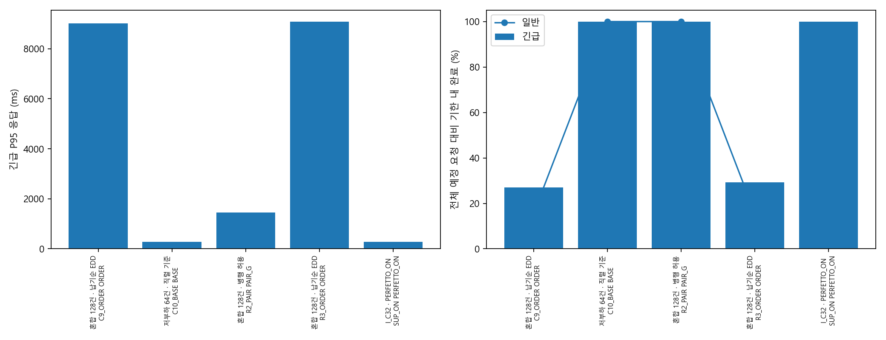
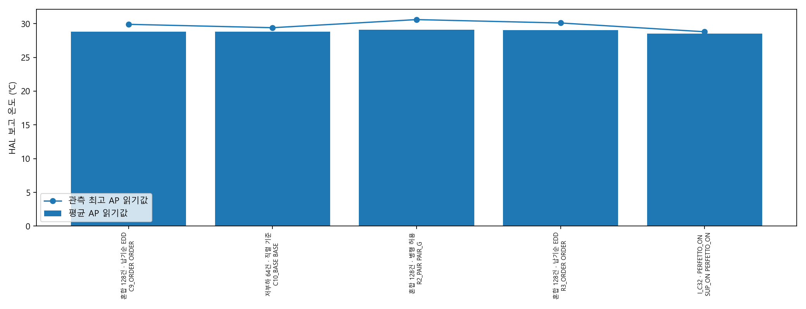
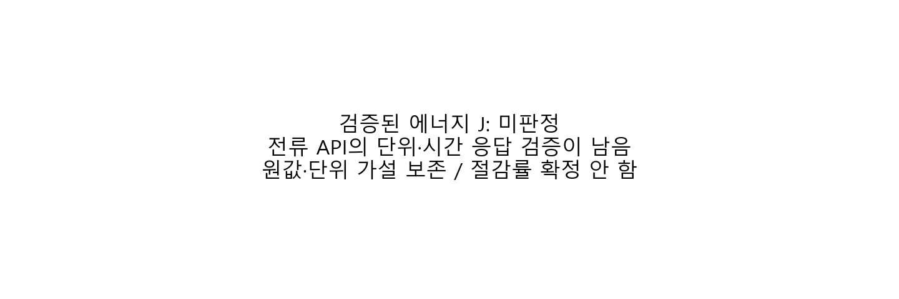
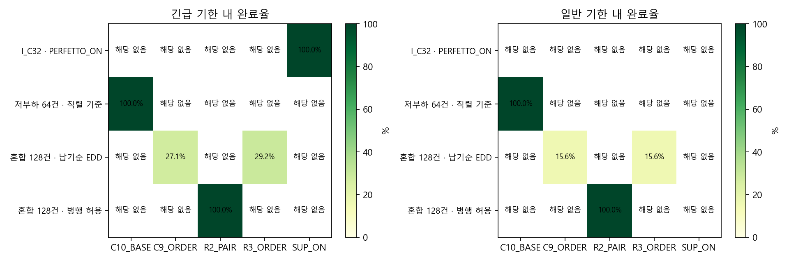

각 사례는 서로 다른 시작 상태의 진단 반복입니다. AP 숫자로 정책 우열을 판정하지 않으며 ON 단독 자료로 계측 오버헤드를 비교하지 않습니다. 후속 보고서
서비스·HAL 읽기값을 비교합니다. 표면 온도·센서 정확도·검증된 에너지 절감을 뜻하지 않습니다. 실패·미실행은 attempts.csv에 보존했습니다.
sessions.csvattempts.csvrequests.csvpaired.csvpaired_intervals.csvreported_AP.csvbattery_API_unvalidated.csv


